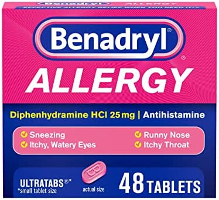
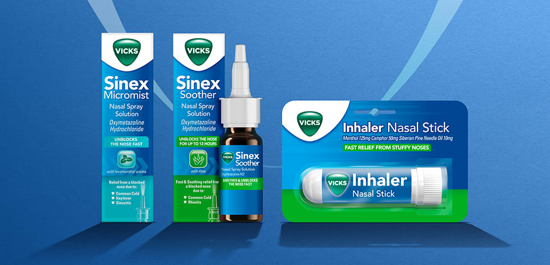
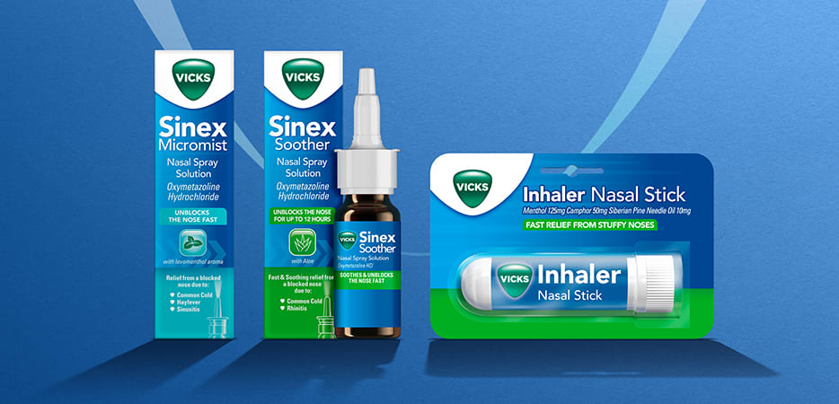

Many over-the-counter products can relieve cold and flu symptoms. However, the variety of products available can sometimes be overwhelming. When choosing a cold medicine, people need to know which symptoms they want to relive. Choosing the wrong medication for the symptoms will mean that the remedy does not help. Well, if we talk about people with a cold or flu may experience a runnt nose, or rhinitis.
Medication For Runny Nose
 A Runny nose is how the body reacts to the inflammation and irritation that a cold virus is causing in the nasal passages.If you are facing problemof a runny nose then Benadryl might be better for drying up a runny nose. Benadryl contains Diphenhydramine which mean's it reduces your body's natural reaction to irritation, and it also might make you drowsy, which is why it's best to take this medicine at bedtime.
Medication for Stuffy Nose
 
A Stuffy nose can leave you feeling like you’re struggling to take in fresh air.
It can also linger in your sinuses evenafter other symptoms fade.Best Medication
for a stuffy nose would be to take a Vicks Inhaler.One canrelay on
it for a stuffy nose as it helps in taking fresh air.

A Stuffy nose can leave you feeling like you’re struggling to take in fresh air.
It can also linger in your sinuses evenafter other symptoms fade.Best Medication
for a stuffy nose would be to take a Vicks Inhaler.One canrelay on
it for a stuffy nose as it helps in taking fresh air.